Chapter 2 Data Exploration
The starting data consist in RNA-seq count matrix after quantification (exp), a demographic table (demo) and a gene length table (width). The count table is a integer matrix without any normalizations. Each rows correspond to a gene, each column represent a different sample from three species (human, chimpanzee and rhesus macaque). The genes are protein-coding and orthologous between the three species.
2.0.1 Data loading
So let’s start!
# First load the libraries we will use in this section
suppressPackageStartupMessages(library(sva))
suppressPackageStartupMessages(library(DESeq2))
suppressPackageStartupMessages(library(limma))
suppressPackageStartupMessages(library(tidyverse))
suppressPackageStartupMessages(library(openxlsx))
suppressPackageStartupMessages(library(ggplot2))
suppressPackageStartupMessages(library(ggpubr))
suppressPackageStartupMessages(library(pheatmap))
suppressPackageStartupMessages(library(here))
suppressPackageStartupMessages(library(future.apply))
suppressPackageStartupMessages(library(broom))
# Clean the env
rm(list = ls())
# the data is stored under the subdirectory 'data'
list.files()
## [1] "_book" "_bookdown_files"
## [3] "_bookdown.yml" "_build.sh"
## [5] "_deploy.sh" "_output.yml"
## [7] "01-introPipes.Rmd" "02-DataExploration.Rmd"
## [9] "03-DiffExpAnalysis.Rmd" "addson"
## [11] "book.bib" "bookdown-demo_cache"
## [13] "bookdown-demo_files" "bookdown-demo.Rmd"
## [15] "bookdown-demo.Rproj" "DESCRIPTION"
## [17] "Dockerfile" "images"
## [19] "index.Rmd" "LICENSE"
## [21] "now.json" "packages.bib"
## [23] "peb_data" "preamble.tex"
## [25] "README.md" "style.css"
## [27] "toc.css"
# load the data you need
load(here("peb_data", "PEB_2020.RData"))
# Check what data you loaded
ls()
## [1] "demo" "exp" "width"The exp is the data frame containing raw counts.
The demo is the demographic data with some biological and technical covariates
The width is the length of the the genes for data normalizations.
# Check the dimension of exp
dim(exp)
## [1] 13291 30
# Let's have a look to the data distribution of the
# expression
summary(exp)
## Hsap_1 Hsap_2 Hsap_3
## Min. : 0 Min. : 0 Min. : 0
## 1st Qu.: 28 1st Qu.: 13 1st Qu.: 14
## Median : 464 Median : 156 Median : 195
## Mean : 3415 Mean : 1209 Mean : 1427
## 3rd Qu.: 2256 3rd Qu.: 787 3rd Qu.: 974
## Max. :755442 Max. :252898 Max. :266769
## Hsap_4 Hsap_5 Hsap_6
## Min. : 0 Min. : 0 Min. : 0
## 1st Qu.: 9 1st Qu.: 13 1st Qu.: 12
## Median : 110 Median : 163 Median : 176
## Mean : 977 Mean : 1419 Mean : 1217
## 3rd Qu.: 578 3rd Qu.: 882 3rd Qu.: 823
## Max. :208039 Max. :310497 Max. :235453
## Hsap_7 Hsap_8 Hsap_9
## Min. : 0 Min. : 0 Min. : 0
## 1st Qu.: 19 1st Qu.: 14 1st Qu.: 9
## Median : 238 Median : 142 Median : 132
## Mean : 1150 Mean : 1080 Mean : 1212
## 3rd Qu.: 990 3rd Qu.: 642 3rd Qu.: 704
## Max. :156780 Max. :208555 Max. :306040
## Hsap_10 PanTro_1 PanTro_2
## Min. : 0 Min. : 0 Min. : 0
## 1st Qu.: 9 1st Qu.: 8 1st Qu.: 13
## Median : 146 Median : 72 Median : 188
## Mean : 1312 Mean : 363 Mean : 1942
## 3rd Qu.: 774 3rd Qu.: 321 3rd Qu.: 1048
## Max. :291565 Max. :42193 Max. :492501
## PanTro_3 PanTro_4 PanTro_5
## Min. : 0 Min. : 0 Min. : 0
## 1st Qu.: 0 1st Qu.: 9 1st Qu.: 7
## Median : 50 Median : 139 Median : 113
## Mean : 312 Mean : 1125 Mean : 1218
## 3rd Qu.: 235 3rd Qu.: 697 3rd Qu.: 670
## Max. :60608 Max. :257678 Max. :214389
## PanTro_6 PanTro_7 PanTro_8
## Min. : 0 Min. : 0 Min. : 0
## 1st Qu.: 6 1st Qu.: 24 1st Qu.: 12
## Median : 69 Median : 268 Median : 173
## Mean : 575 Mean : 1067 Mean : 1447
## 3rd Qu.: 345 3rd Qu.: 1000 3rd Qu.: 910
## Max. :170033 Max. :92973 Max. :345260
## PanTro_9 PanTro_10 RheMac_1
## Min. : 0 Min. : 0 Min. : 0
## 1st Qu.: 12 1st Qu.: 15 1st Qu.: 9
## Median : 165 Median : 169 Median : 136
## Mean : 995 Mean : 936 Mean : 1053
## 3rd Qu.: 695 3rd Qu.: 727 3rd Qu.: 678
## Max. :155820 Max. :139103 Max. :210549
## RheMac_2 RheMac_3 RheMac_4
## Min. : 0 Min. : 0 Min. : 0
## 1st Qu.: 13 1st Qu.: 5 1st Qu.: 6
## Median : 156 Median : 76 Median : 98
## Mean : 713 Mean : 803 Mean : 538
## 3rd Qu.: 610 3rd Qu.: 432 3rd Qu.: 419
## Max. :85555 Max. :188456 Max. :87970
## RheMac_5 RheMac_6 RheMac_7
## Min. : 0 Min. : 0 Min. : 0
## 1st Qu.: 9 1st Qu.: 7 1st Qu.: 12
## Median : 98 Median : 103 Median : 148
## Mean : 492 Mean : 919 Mean : 706
## 3rd Qu.: 399 3rd Qu.: 522 3rd Qu.: 590
## Max. :52623 Max. :199397 Max. :64114
## RheMac_8 RheMac_9 RheMac_10
## Min. : 0 Min. : 0 Min. : 0
## 1st Qu.: 14 1st Qu.: 8 1st Qu.: 4
## Median : 177 Median : 78 Median : 65
## Mean : 1137 Mean : 429 Mean : 697
## 3rd Qu.: 750 3rd Qu.: 334 3rd Qu.: 365
## Max. :268860 Max. :46577 Max. :182266
boxplot(exp)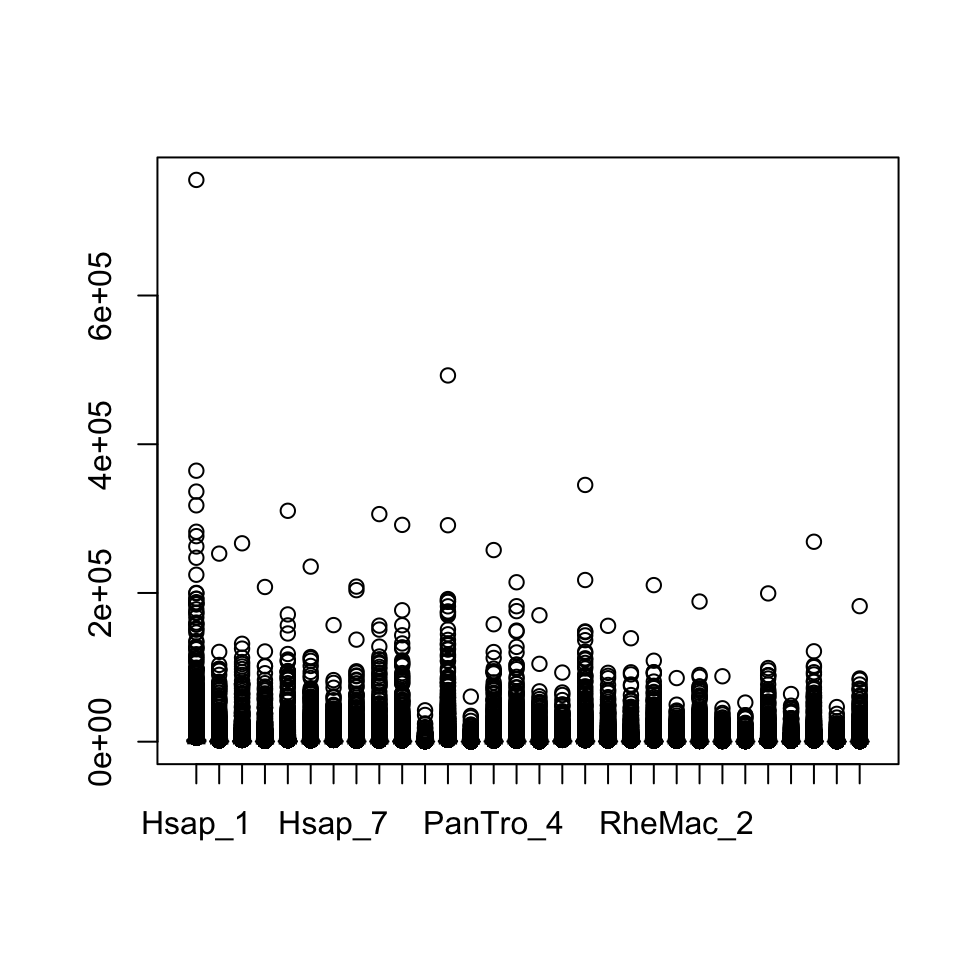
2.0.2 Demographic screening
Demographics are important to understand what type of data you are dealing with. There are several factors that can influence expression: some are categorical variables (e.g. Sex, Hemisphere), others are continous variables (e.g. Age). These typically are important covariates to take into account into the analysis. In principle, RNA-seq is a snapshot of the gene expression in a specific moment of time from a specific tissue (bulk RNA-seq) or cell-type (single cell RNA-seq).
Different factors can play a role in explaining partially the variance of the gene expression you see.
For instance, gender can slightly differentiate gene expression therefore we presume it will have a minimal impact on gene expression variance. On the other hand variables like PMI (Post-mortem interval), RIN (rna integrity number), Brain Bank (the institute where you collect the data), Batch (sequencing days and hands), and Age (the age of the individual who donated the tissue) might have a sever impact on the gene expression variance.
These variables must be taken into account when RNA-seq (but also other genomics) is analyzed.
Now let’s see what we have in the demographic
head(demo)
## Species Sex Age RIN Hemisphere PMI
## Hsap_1 Hsap M 42 9.8 L 13
## Hsap_2 Hsap M 39 6.4 L 11
## Hsap_3 Hsap F 25 8.8 R 18
## Hsap_4 Hsap F 21 7.9 L 6
## Hsap_5 Hsap M 45 6.6 L 16
## Hsap_6 Hsap M 25 5.8 R 5
str(demo)
## 'data.frame': 30 obs. of 6 variables:
## $ Species : Factor w/ 3 levels "Hsap","PanTro",..: 1 1 1 1 1 1 1 1 1 1 ...
## $ Sex : Factor w/ 2 levels "F","M": 2 2 1 1 2 2 1 2 2 2 ...
## $ Age : int 42 39 25 21 45 25 26 39 31 39 ...
## $ RIN : num 9.8 6.4 8.8 7.9 6.6 5.8 8.7 6.6 8.1 2.7 ...
## $ Hemisphere: Factor w/ 2 levels "L","R": 1 1 2 1 1 2 2 2 2 2 ...
## $ PMI : int 13 11 18 6 16 5 19 18 10 18 ...2.0.3 Data normalization
Do you see something weird in the boxplot?
Pretty sure you realized that the distribution is skewed toward the bottom.
There are several factors that can influence this:
Library size: sequencing depth.
Gene lenght: long gens = more reads
Library composition: some biological factors can influence the transcriptome between samples.
GC content: GC can influence mappability, therefore gene count.
Several methods have been developped to normalize the values prior downstream analysis. Here some examples:
CPM (Counts per million): no length considered
RPKM (Reads per kilobase per million): length considered
TPM (Transcript per million): length considered
CQN (Conditional quantile normalization): length and GC content considered
2.0.3.1 Calculate CPM
# Let's calculate the CPM
plan(multiprocess)
# future.apply is an alternative of the standard apply that
# goes in parallel. here we apply a function to the
# expression matrix dividing each column by the total reads *
# one million.
cpm <- future_apply(exp, 2, function(x) x/sum(as.numeric(x)) *
10^6)
# Let's have a look!
head(cpm)
## Hsap_1 Hsap_2 Hsap_3 Hsap_4 Hsap_5 Hsap_6
## A1BG 3.65692 12.6344 7.4863 31.5862 9.3343 14.0957
## A1CF 0.15421 0.3734 0.1582 0.0000 0.5834 0.1236
## A2M 1.49801 4.1077 0.4218 0.0000 2.5457 1.5456
## A2ML1 0.41856 0.9958 0.4218 0.2311 1.0607 0.6182
## A3GALT2 1.93861 2.3651 1.9507 0.6934 0.5304 1.6692
## A4GALT 0.02203 0.2490 0.1054 0.1541 0.0000 0.1236
## Hsap_7 Hsap_8 Hsap_9 Hsap_10 PanTro_1 PanTro_2
## A1BG 5.6898 194.65722 14.0305 2.4087 11.1888 0.23248
## A1CF 0.1962 0.06969 0.0000 0.0000 0.0000 0.00000
## A2M 1.1118 0.62725 0.6829 0.4588 1.2432 4.92086
## A2ML1 0.9810 3.13626 0.0000 0.4015 5.5944 0.11624
## A3GALT2 3.2046 11.70870 1.3037 0.4588 3.9368 0.19373
## A4GALT 0.1962 0.62725 0.2483 0.0000 0.2072 0.03875
## PanTro_3 PanTro_4 PanTro_5 PanTro_6 PanTro_7
## A1BG 23.145 1.33764 0.74119 3.4020 7.3308
## A1CF 0.000 0.06688 0.06177 0.0000 0.2115
## A2M 5.545 0.13376 1.05002 1.8318 0.6344
## A2ML1 0.000 0.53506 0.24706 0.3925 1.4098
## A3GALT2 6.751 1.20388 0.43236 1.0468 4.1588
## A4GALT 0.000 0.00000 0.00000 0.2617 0.4229
## PanTro_8 PanTro_9 PanTro_10 RheMac_1 RheMac_2
## A1BG 0.7277 5.2930 4.3415 0.5717 1.1613
## A1CF 0.3639 0.8318 0.0804 0.2144 0.1056
## A2M 1.7153 1.1342 0.4020 0.6431 0.7390
## A2ML1 0.6238 1.5879 1.2864 0.2858 0.5279
## A3GALT2 0.6238 2.3440 4.8239 1.0004 0.9502
## A4GALT 0.1559 0.3781 0.0000 0.2858 0.2112
## RheMac_3 RheMac_4 RheMac_5 RheMac_6 RheMac_7
## A1BG 0.1875 0.1398 1.5296 0.0000 3.0919
## A1CF 0.1875 0.0000 0.0000 0.0000 0.1066
## A2M 2.2501 0.0000 1.9885 2.3751 0.7463
## A2ML1 0.1875 0.6988 0.7648 0.1638 0.6397
## A3GALT2 0.1875 0.0000 1.5296 0.4914 1.0662
## A4GALT 0.0000 0.1398 0.0000 0.0819 0.3198
## RheMac_8 RheMac_9 RheMac_10
## A1BG 0.06617 0.7008 0.6475
## A1CF 0.06617 0.1752 0.0000
## A2M 7.27894 2.2776 1.0792
## A2ML1 0.52938 0.3504 0.0000
## A3GALT2 0.99258 3.6793 0.7555
## A4GALT 0.13234 0.0000 0.0000
# The sum of each column is = 10^6.
colSums(cpm)
## Hsap_1 Hsap_2 Hsap_3 Hsap_4 Hsap_5 Hsap_6
## 1e+06 1e+06 1e+06 1e+06 1e+06 1e+06
## Hsap_7 Hsap_8 Hsap_9 Hsap_10 PanTro_1 PanTro_2
## 1e+06 1e+06 1e+06 1e+06 1e+06 1e+06
## PanTro_3 PanTro_4 PanTro_5 PanTro_6 PanTro_7 PanTro_8
## 1e+06 1e+06 1e+06 1e+06 1e+06 1e+06
## PanTro_9 PanTro_10 RheMac_1 RheMac_2 RheMac_3 RheMac_4
## 1e+06 1e+06 1e+06 1e+06 1e+06 1e+06
## RheMac_5 RheMac_6 RheMac_7 RheMac_8 RheMac_9 RheMac_10
## 1e+06 1e+06 1e+06 1e+06 1e+06 1e+062.0.3.2 Calculate RPKM
# For RPKM you need the length of the genes (width)
head(width)
## Gene Length GCperc
## 1 A1BG 4006 0.5580
## 2 A1CF 9603 0.3624
## 3 A2M 6384 0.3718
## 4 A2ML1 7303 0.4423
## 5 A3GALT2 1023 0.5419
## 6 A4GALT 2943 0.5239
# let's create a vector with the gene length
l <- as.vector(width$Length)
# Calculate the RPKM
rpkm <- future_apply(exp, 2, function(x) 10^9 * x/l/sum(as.numeric(x)))
# Let's have a look!
head(rpkm)
## Hsap_1 Hsap_2 Hsap_3 Hsap_4 Hsap_5 Hsap_6
## A1BG 0.912860 3.15386 1.86878 7.88473 2.33008 3.51865
## A1CF 0.016058 0.03889 0.01647 0.00000 0.06075 0.01288
## A2M 0.234651 0.64344 0.06607 0.00000 0.39877 0.24210
## A2ML1 0.057314 0.13636 0.05775 0.03165 0.14524 0.08465
## A3GALT2 1.895021 2.31188 1.90681 0.67777 0.51843 1.63170
## A4GALT 0.007485 0.08459 0.03583 0.05235 0.00000 0.04201
## Hsap_7 Hsap_8 Hsap_9 Hsap_10 PanTro_1 PanTro_2
## A1BG 1.42033 48.591418 3.50236 0.60128 2.7930 0.05803
## A1CF 0.02043 0.007258 0.00000 0.00000 0.0000 0.00000
## A2M 0.17416 0.098254 0.10697 0.07187 0.1947 0.77081
## A2ML1 0.13433 0.429448 0.00000 0.05497 0.7660 0.01592
## A3GALT2 3.13257 11.445459 1.27441 0.44849 3.8483 0.18938
## A4GALT 0.06667 0.213134 0.08438 0.00000 0.0704 0.01317
## PanTro_3 PanTro_4 PanTro_5 PanTro_6 PanTro_7
## A1BG 5.7777 0.333909 0.185019 0.84922 1.82995
## A1CF 0.0000 0.006965 0.006432 0.00000 0.02202
## A2M 0.8686 0.020953 0.164476 0.28694 0.09937
## A2ML1 0.0000 0.073265 0.033830 0.05375 0.19304
## A3GALT2 6.5989 1.176810 0.422639 1.02322 4.06531
## A4GALT 0.0000 0.000000 0.000000 0.08892 0.14371
## PanTro_8 PanTro_9 PanTro_10 RheMac_1 RheMac_2
## A1BG 0.18166 1.32126 1.083746 0.14270 0.28990
## A1CF 0.03789 0.08661 0.008372 0.02232 0.01099
## A2M 0.26869 0.17766 0.062968 0.10074 0.11576
## A2ML1 0.08541 0.21743 0.176142 0.03914 0.07228
## A3GALT2 0.60974 2.29133 4.715420 0.97791 0.92883
## A4GALT 0.05299 0.12846 0.000000 0.09712 0.07175
## RheMac_3 RheMac_4 RheMac_5 RheMac_6 RheMac_7
## A1BG 0.04681 0.03489 0.3818 0.00000 0.77181
## A1CF 0.01953 0.00000 0.0000 0.00000 0.01110
## A2M 0.35246 0.00000 0.3115 0.37203 0.11690
## A2ML1 0.02568 0.09569 0.1047 0.02243 0.08759
## A3GALT2 0.18329 0.00000 1.4952 0.48034 1.04219
## A4GALT 0.00000 0.04749 0.0000 0.02783 0.10868
## RheMac_8 RheMac_9 RheMac_10
## A1BG 0.016518 0.17494 0.1616
## A1CF 0.006891 0.01824 0.0000
## A2M 1.140185 0.35677 0.1691
## A2ML1 0.072488 0.04798 0.0000
## A3GALT2 0.970267 3.59655 0.7385
## A4GALT 0.044969 0.00000 0.0000
# Now the sum are all different!.
colSums(rpkm)
## Hsap_1 Hsap_2 Hsap_3 Hsap_4 Hsap_5 Hsap_6
## 135992 137546 136729 136757 135507 137081
## Hsap_7 Hsap_8 Hsap_9 Hsap_10 PanTro_1 PanTro_2
## 140837 140161 135588 134455 149958 133939
## PanTro_3 PanTro_4 PanTro_5 PanTro_6 PanTro_7 PanTro_8
## 145104 135347 132978 138628 141954 135596
## PanTro_9 PanTro_10 RheMac_1 RheMac_2 RheMac_3 RheMac_4
## 138648 139438 134781 142715 132472 139544
## RheMac_5 RheMac_6 RheMac_7 RheMac_8 RheMac_9 RheMac_10
## 141869 133605 140033 136176 142478 1328712.0.3.3 Calculate TPM
# For TPM you need the length of the genes (l)
# First step: Calculate the reads per kilobase
rpk <- future_apply(exp, 2, function(x) x/(l/1000))
# Now the TPM
tpm <- future_apply(rpk, 2, function(x) x/sum(as.numeric(x)) *
10^6)
# Let's have a look!
head(tpm)
## Hsap_1 Hsap_2 Hsap_3 Hsap_4 Hsap_5 Hsap_6
## A1BG 6.71259 22.9295 13.6678 57.6550 17.1953 25.66842
## A1CF 0.11808 0.2827 0.1205 0.0000 0.4483 0.09393
## A2M 1.72548 4.6780 0.4832 0.0000 2.9428 1.76613
## A2ML1 0.42145 0.9914 0.4224 0.2314 1.0719 0.61755
## A3GALT2 13.93477 16.8080 13.9459 4.9560 3.8259 11.90319
## A4GALT 0.05504 0.6150 0.2620 0.3828 0.0000 0.30649
## Hsap_7 Hsap_8 Hsap_9 Hsap_10 PanTro_1 PanTro_2
## A1BG 10.0849 346.68275 25.8309 4.4720 18.6252 0.4333
## A1CF 0.1451 0.05178 0.0000 0.0000 0.0000 0.0000
## A2M 1.2366 0.70101 0.7889 0.5345 1.2986 5.7550
## A2ML1 0.9538 3.06396 0.0000 0.4088 5.1083 0.1188
## A3GALT2 22.2425 81.65935 9.3991 3.3356 25.6623 1.4139
## A4GALT 0.4734 1.52063 0.6223 0.0000 0.4695 0.0983
## PanTro_3 PanTro_4 PanTro_5 PanTro_6 PanTro_7
## A1BG 39.817 2.46706 1.39135 6.1259 12.8912
## A1CF 0.000 0.05146 0.04837 0.0000 0.1551
## A2M 5.986 0.15481 1.23687 2.0699 0.7000
## A2ML1 0.000 0.54131 0.25441 0.3877 1.3599
## A3GALT2 45.477 8.69476 3.17826 7.3811 28.6383
## A4GALT 0.000 0.00000 0.00000 0.6414 1.0124
## PanTro_8 PanTro_9 PanTro_10 RheMac_1 RheMac_2
## A1BG 1.3397 9.5296 7.77226 1.0588 2.03133
## A1CF 0.2794 0.6247 0.06004 0.1656 0.07704
## A2M 1.9816 1.2814 0.45159 0.7474 0.81116
## A2ML1 0.6299 1.5682 1.26323 0.2904 0.50649
## A3GALT2 4.4967 16.5262 33.81741 7.2556 6.50828
## A4GALT 0.3908 0.9265 0.00000 0.7206 0.50274
## RheMac_3 RheMac_4 RheMac_5 RheMac_6 RheMac_7
## A1BG 0.3533 0.2500 2.6915 0.0000 5.51160
## A1CF 0.1474 0.0000 0.0000 0.0000 0.07928
## A2M 2.6606 0.0000 2.1956 2.7846 0.83483
## A2ML1 0.1938 0.6857 0.7382 0.1679 0.62552
## A3GALT2 1.3836 0.0000 10.5396 3.5953 7.44243
## A4GALT 0.0000 0.3403 0.0000 0.2083 0.77611
## RheMac_8 RheMac_9 RheMac_10
## A1BG 0.1213 1.2278 1.217
## A1CF 0.0506 0.1281 0.000
## A2M 8.3729 2.5041 1.272
## A2ML1 0.5323 0.3368 0.000
## A3GALT2 7.1251 25.2428 5.558
## A4GALT 0.3302 0.0000 0.000
# The sum of each column is = 10^6!.
colSums(tpm)
## Hsap_1 Hsap_2 Hsap_3 Hsap_4 Hsap_5 Hsap_6
## 1e+06 1e+06 1e+06 1e+06 1e+06 1e+06
## Hsap_7 Hsap_8 Hsap_9 Hsap_10 PanTro_1 PanTro_2
## 1e+06 1e+06 1e+06 1e+06 1e+06 1e+06
## PanTro_3 PanTro_4 PanTro_5 PanTro_6 PanTro_7 PanTro_8
## 1e+06 1e+06 1e+06 1e+06 1e+06 1e+06
## PanTro_9 PanTro_10 RheMac_1 RheMac_2 RheMac_3 RheMac_4
## 1e+06 1e+06 1e+06 1e+06 1e+06 1e+06
## RheMac_5 RheMac_6 RheMac_7 RheMac_8 RheMac_9 RheMac_10
## 1e+06 1e+06 1e+06 1e+06 1e+06 1e+062.0.3.4 Calculate CQN
suppressPackageStartupMessages(library(cqn))
# let's create a vector with the gene length and gc content
length <- as.vector(width$Length)
gc_content <- as.vector(width$GCperc)
# Calculate CQN and normalized values
temp <- cqn(exp, lengths = length, x = gc_content, sizeFactors = colSums(exp),
lengthMethod = "fixed", sqn = FALSE)
# get log2(normalized RPKM) values
quantGC <- 2^(temp$y + temp$offset)
# Let's have a look!
head(quantGC)
## Hsap_1 Hsap_2 Hsap_3 Hsap_4 Hsap_5 Hsap_6
## A1BG 2.56927 10.55845 5.08924 30.841415 9.74631 8.55624
## A1CF 0.01205 0.02649 0.01316 0.004706 0.03552 0.01240
## A2M 0.15803 0.39396 0.04539 0.007449 0.23461 0.16546
## A2ML1 0.06277 0.15799 0.06846 0.054177 0.18876 0.09853
## A3GALT2 4.70302 6.63554 4.55666 2.526362 1.98350 3.65302
## A4GALT 0.03149 0.24275 0.10567 0.220901 0.05107 0.11910
## Hsap_7 Hsap_8 Hsap_9 Hsap_10 PanTro_1
## A1BG 1.52687 156.7761 15.730795 2.678769 1.68308
## A1CF 0.01873 0.0109 0.004176 0.003558 0.03280
## A2M 0.12593 0.0843 0.080090 0.050280 0.30675
## A2ML1 0.12394 0.5023 0.011012 0.078499 0.64153
## A3GALT2 3.36678 30.5082 4.944737 1.853574 2.52037
## A4GALT 0.09204 0.5077 0.314778 0.058764 0.09251
## PanTro_2 PanTro_3 PanTro_4 PanTro_5 PanTro_6
## A1BG 0.323282 7.57013 1.203895 1.307150 2.22728
## A1CF 0.002187 0.02701 0.008085 0.006478 0.01398
## A2M 0.456473 0.90128 0.018918 0.093457 0.29765
## A2ML1 0.032910 0.02960 0.100878 0.059772 0.08046
## A3GALT2 0.968989 8.16268 3.743524 2.591185 2.57671
## A4GALT 0.097419 0.08978 0.058774 0.089540 0.25963
## PanTro_7 PanTro_8 PanTro_9 PanTro_10 RheMac_1
## A1BG 1.36851 0.80972 1.83918 1.15951 0.47642
## A1CF 0.02369 0.02137 0.08902 0.01406 0.01753
## A2M 0.08660 0.14582 0.17202 0.06197 0.06846
## A2ML1 0.14986 0.11238 0.22794 0.17717 0.05387
## A3GALT2 3.05732 2.36518 3.10524 5.06858 2.79150
## A4GALT 0.12378 0.21146 0.19201 0.02893 0.28296
## RheMac_2 RheMac_3 RheMac_4 RheMac_5 RheMac_6
## A1BG 0.24532 0.38822 0.09098 0.35784 0.073764
## A1CF 0.02100 0.01422 0.01176 0.01670 0.005465
## A2M 0.11888 0.19411 0.01709 0.32997 0.255428
## A2ML1 0.06967 0.05314 0.10073 0.10292 0.042981
## A3GALT2 0.80543 1.29033 0.16979 1.39610 1.816089
## A4GALT 0.08459 0.12283 0.11129 0.04386 0.157588
## RheMac_7 RheMac_8 RheMac_9 RheMac_10
## A1BG 0.66299 0.05289 0.17867 1.095789
## A1CF 0.02118 0.01095 0.04853 0.005946
## A2M 0.12278 0.92096 0.46590 0.106475
## A2ML1 0.08463 0.09071 0.06470 0.021158
## A3GALT2 0.95892 1.61560 3.16347 4.244491
## A4GALT 0.12191 0.10148 0.05126 0.153846
# The sum of each column is = 10^6!.
colSums(quantGC)
## Hsap_1 Hsap_2 Hsap_3 Hsap_4 Hsap_5 Hsap_6
## 136938 135675 132641 148347 140195 136839
## Hsap_7 Hsap_8 Hsap_9 Hsap_10 PanTro_1 PanTro_2
## 117928 159501 155370 143235 133363 149459
## PanTro_3 PanTro_4 PanTro_5 PanTro_6 PanTro_7 PanTro_8
## 147426 134711 138760 165924 108437 128301
## PanTro_9 PanTro_10 RheMac_1 RheMac_2 RheMac_3 RheMac_4
## 143486 132448 132904 120266 134040 128488
## RheMac_5 RheMac_6 RheMac_7 RheMac_8 RheMac_9 RheMac_10
## 127934 145847 122743 142587 140086 1379972.0.3.5 Check the normalized data
Now we can have a look to the distribution of the normalized data
# Let's color based on the species
colors <- as.numeric(factor(demo$Species)) + 1
# Check the boxplot for CPM
boxplot(cpm)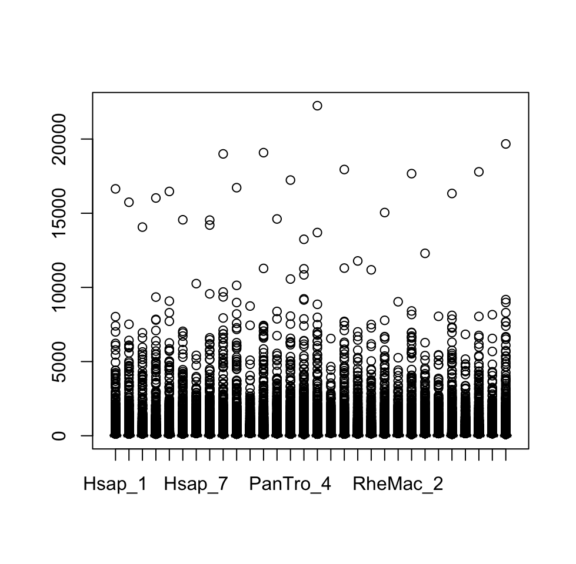
# Still skewed? Let's make every normally distributed the +1
# is a offset reads to keep the 0 as 0!
boxplot(log2(cpm + 1), notch = TRUE, main = "log2(CPM+1)", col = colors)
abline(h = median(log2(cpm + 1)), col = "blue")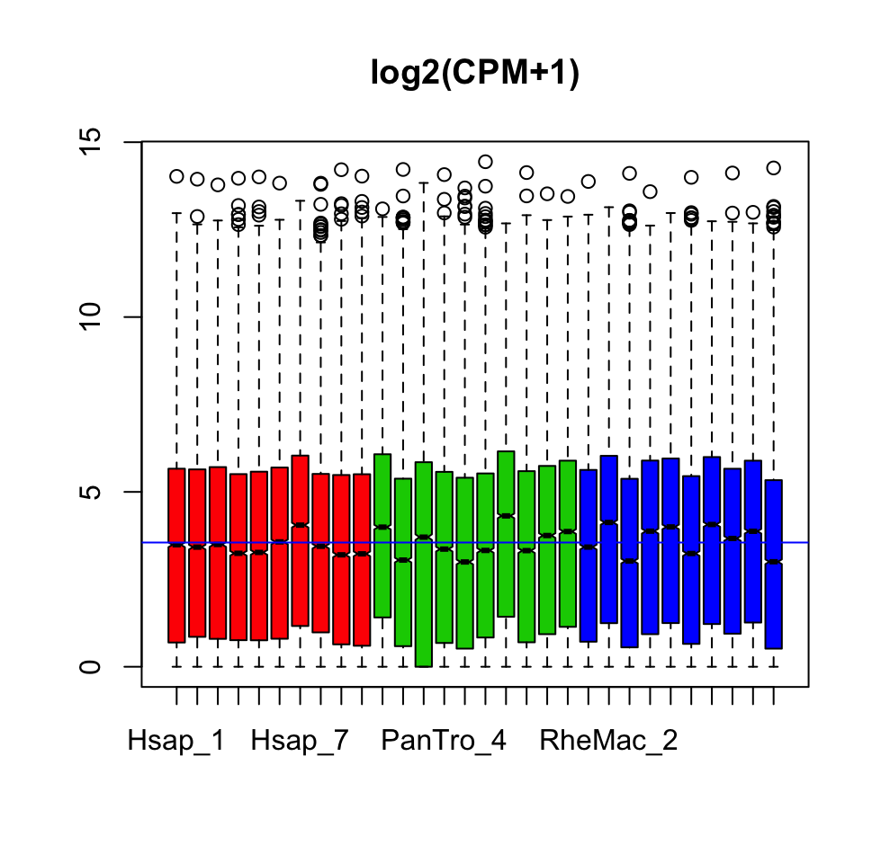
boxplot(log2(rpkm + 1), notch = TRUE, main = "log2(RPKM+1)",
col = colors)
abline(h = median(log2(rpkm + 1)), col = "blue")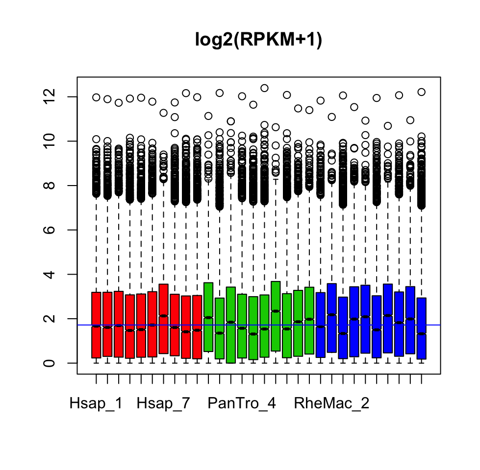
boxplot(log2(tpm + 1), notch = TRUE, main = "log2(TPM+1)", col = colors)
abline(h = median(log2(tpm + 1)), col = "blue")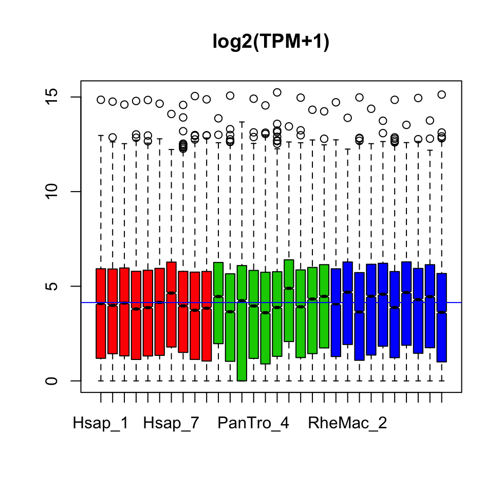
boxplot(log2(quantGC + 1), notch = TRUE, main = "log2(quantGC+1)",
col = colors)
abline(h = median(log2(quantGC + 1)), col = "blue")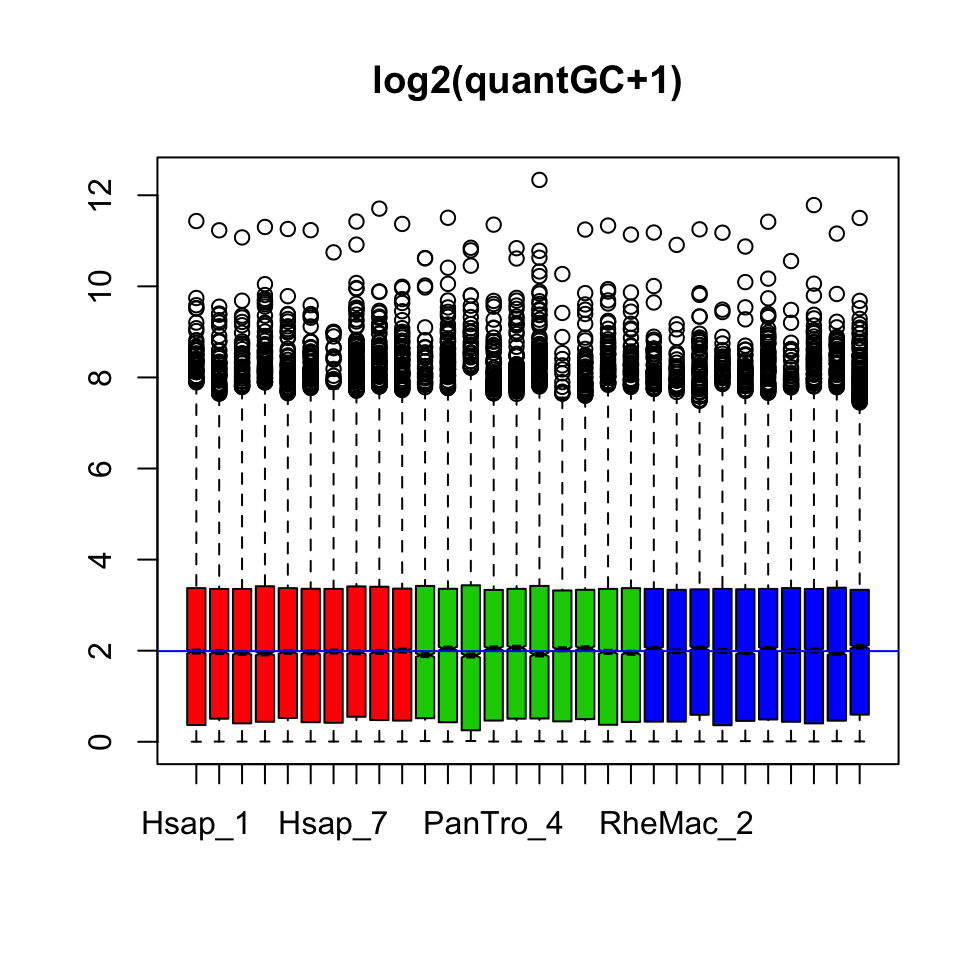
2.0.4 Initial Data Exploration
Now the counts are normalized and we know what we are dealing with, we can start to understand how the samples are similar/dissimilar based on the quantified gene expression profiles of the genes. We would expect that biological/technical replicates will cluster together. This can be computed with different unsupervised clustering methods (e.g. hierarchical clustering) or with dimensionality reductions methods (e.g. Principal Component Analysis)
Let’s start:
# First let's make a matric with log2 scaled data.
mat <- log2(cpm + 1)
# Calculate the variance for each gene This will detect the
# most variables genes
variance <- apply(mat, 1, var)
# Let's sort them and select the top 100 genes.
selgene <- names(variance[order(variance, decreasing = T)][1:100])
# Let's now calculate the Principal Components for the top
# 100 genes
pca_cpm <- prcomp(t(mat[selgene, ]))
# Print the summary of the pcas
summary(pca_cpm)
## Importance of components:
## PC1 PC2 PC3 PC4 PC5
## Standard deviation 16.66 9.494 7.416 2.6041 1.85325
## Proportion of Variance 0.61 0.198 0.121 0.0149 0.00754
## Cumulative Proportion 0.61 0.808 0.929 0.9434 0.95096
## PC6 PC7 PC8 PC9
## Standard deviation 1.69094 1.57609 1.52093 1.48110
## Proportion of Variance 0.00628 0.00546 0.00508 0.00482
## Cumulative Proportion 0.95724 0.96270 0.96778 0.97259
## PC10 PC11 PC12 PC13
## Standard deviation 1.30788 1.2250 1.14155 1.07289
## Proportion of Variance 0.00376 0.0033 0.00286 0.00253
## Cumulative Proportion 0.97635 0.9796 0.98251 0.98503
## PC14 PC15 PC16 PC17
## Standard deviation 0.96525 0.91623 0.86372 0.80614
## Proportion of Variance 0.00205 0.00184 0.00164 0.00143
## Cumulative Proportion 0.98708 0.98892 0.99056 0.99199
## PC18 PC19 PC20 PC21
## Standard deviation 0.7399 0.7074 0.63831 0.63085
## Proportion of Variance 0.0012 0.0011 0.00089 0.00087
## Cumulative Proportion 0.9932 0.9943 0.99519 0.99606
## PC22 PC23 PC24 PC25
## Standard deviation 0.58808 0.54664 0.5226 0.4790
## Proportion of Variance 0.00076 0.00066 0.0006 0.0005
## Cumulative Proportion 0.99682 0.99747 0.9981 0.9986
## PC26 PC27 PC28 PC29
## Standard deviation 0.46119 0.43126 0.37833 0.32475
## Proportion of Variance 0.00047 0.00041 0.00031 0.00023
## Cumulative Proportion 0.99905 0.99945 0.99977 1.00000
## PC30
## Standard deviation 7.4e-15
## Proportion of Variance 0.0e+00
## Cumulative Proportion 1.0e+00
# Let's have a look which PCA explain more variance
screeplot(pca_cpm, npcs = 15, type = "barplot")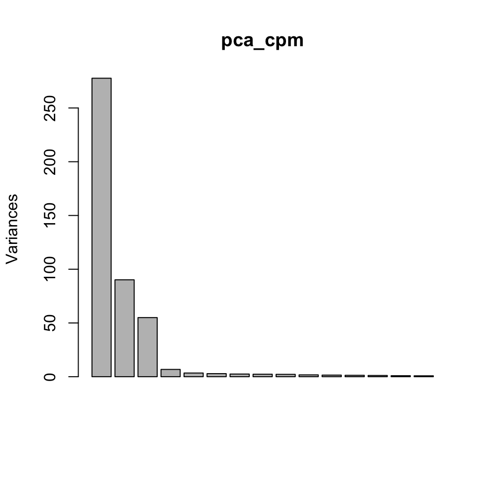
# Now let's create a data frame with the PCAs and the values
# for coloring
PCi <- data.frame(pca_cpm$x, Species = demo$Species)
# Let's calcualte the variance explained by the each
# components
eig <- (pca_cpm$sdev)^2
variance <- eig * 100/sum(eig)
# Now plot the PCA
ggscatter(PCi, x = "PC1", y = "PC2", color = "Species", palette = c("red",
"grey60", "green"), shape = 21, size = 3, ellipse = TRUE,
mean.point = TRUE, star.plot = TRUE) + xlab(paste("PC1 (",
round(variance[1], 1), "% )")) + ylab(paste("PC2 (", round(variance[2],
1), "% )")) + theme_classic()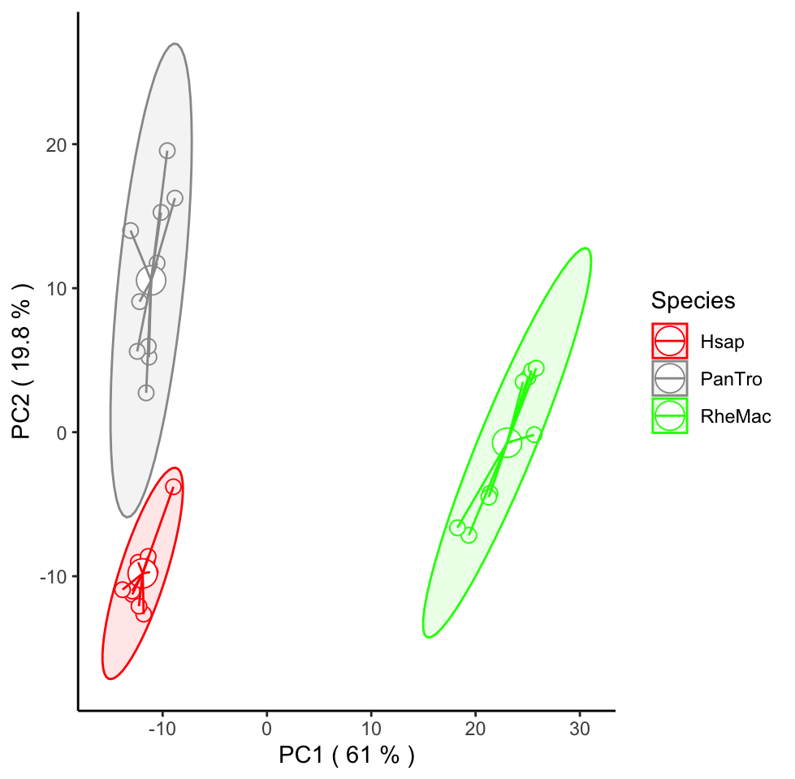
# Now let's make a dendrogram based on hirachical clustering
hc <- hclust(dist(t(mat[selgene, ])), "ave")
plot(hc, hang = -1)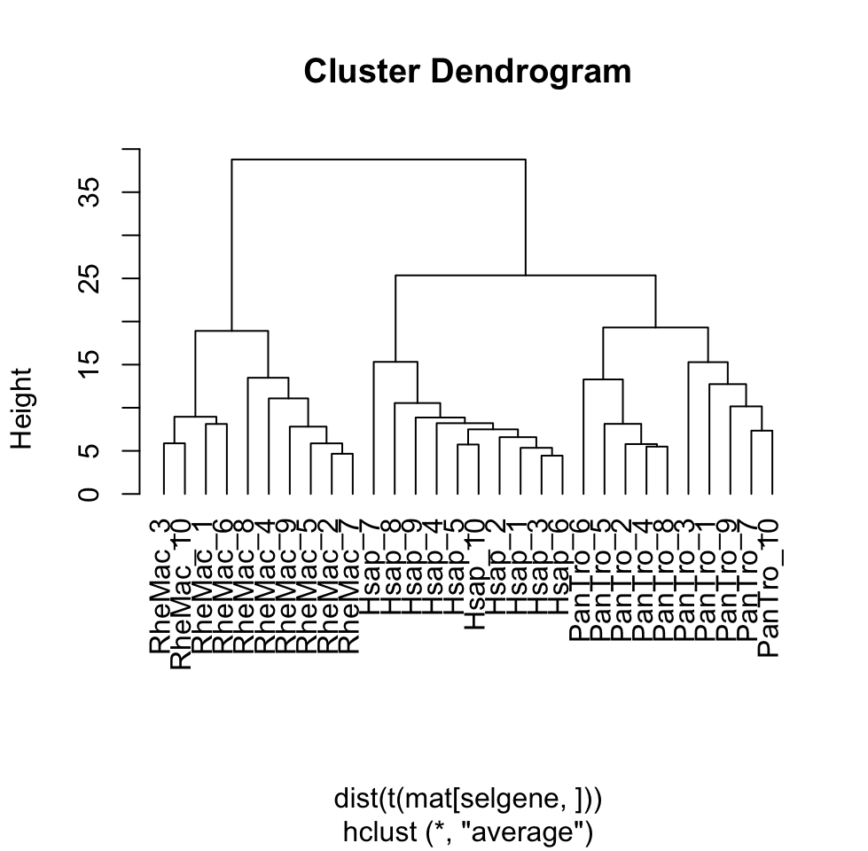
# Another way with correlation
correlation_mat <- cor(mat[selgene, ], method = "pearson")
pheatmap(correlation_mat, annotation_col = demo, scale = "row")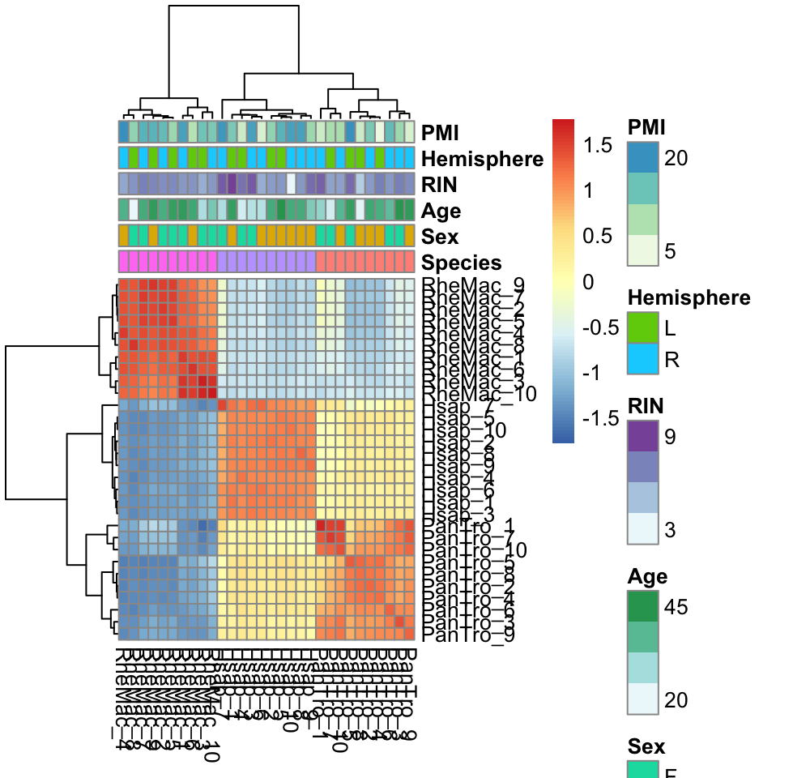
2.0.5 Variance explained by covariates
Now the big question: how much of the gene expression is explained by the biological/technical covaraites? The covaraites can introduces systematic shifts in the downstream analysis and a good quality check is indeed to evaluate the variance that is explained by each of these covariates.
# Re-check the demographic data
head(demo)
## Species Sex Age RIN Hemisphere PMI
## Hsap_1 Hsap M 42 9.8 L 13
## Hsap_2 Hsap M 39 6.4 L 11
## Hsap_3 Hsap F 25 8.8 R 18
## Hsap_4 Hsap F 21 7.9 L 6
## Hsap_5 Hsap M 45 6.6 L 16
## Hsap_6 Hsap M 25 5.8 R 5
# Now let's calcualte the PCA for all the data (not just the
# top variant genes)
pca_all <- prcomp(t(log2(cpm + 1)))
# Let's make a temporary demographic without the species
tmp_demo <- demo[c(-1)]
# Let's include the first PC into the demo file. This is the
# one that explain most of the variance in the data.
tmp_demo$pca1 <- pca_all$x[, 1]
# Make a model matrix for the model
mm <- as.data.frame(model.matrix(~., tmp_demo))
# Now we are going to fit a moodel between the first
# component and the other covaraites
fit1 = lm(pca1 ~ ., data = mm)
# Let's transform the fit into a dataframe with
# library(broom)
df <- tidy(fit1)[-1, ]
# Let's check the info reported
head(df)
## # A tibble: 5 x 5
## term estimate std.error statistic p.value
## <chr> <dbl> <dbl> <dbl> <dbl>
## 1 SexM -42.8 24.3 -1.76 0.0904
## 2 Age 1.38 1.45 0.949 0.352
## 3 RIN 1.95 8.40 0.233 0.818
## 4 HemisphereR 18.3 21.3 0.858 0.400
## 5 PMI -2.40 2.35 -1.02 0.317
# The Pvalue reflect how much the covariates are associated
# with the first component. Transform the p-value into a
# log10 scale.
df$log10 = -log10(df$p.value)
# Let's visualize the association based on this modeling
ggbarplot(df, x = "term", y = "log10", fill = "white", color = "blue",
x.text.angle = 90, ylab = "-log10(P)", xlab = "Covariates",
rotate = TRUE, ggtheme = theme_classic()) + geom_hline(yintercept = 1.3,
linetype = "dotted", color = "red", size = 1) + ylim(0, 5) +
ggtitle("PCA1 vs Covariates")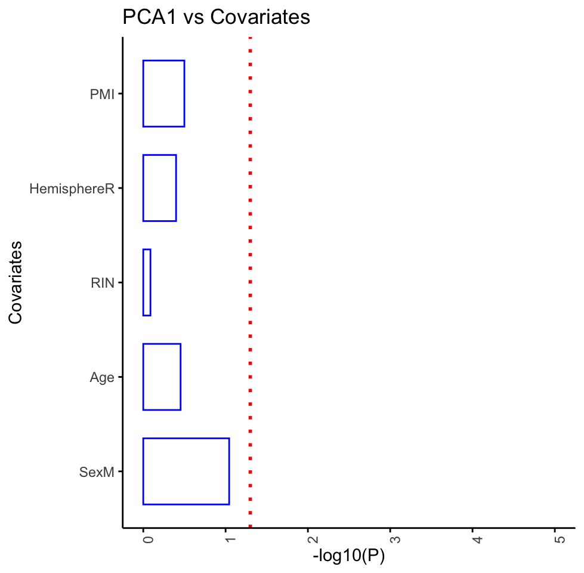
2.0.6 Save the data
Now it’s time to save all the data we generated.
2.0.7 Exercise for Data Exploration chapter
Do data exploration for RPKM.
Do data exploration for TPM
Do data exploration for quantGC.
Covaraite association with different normalized values.